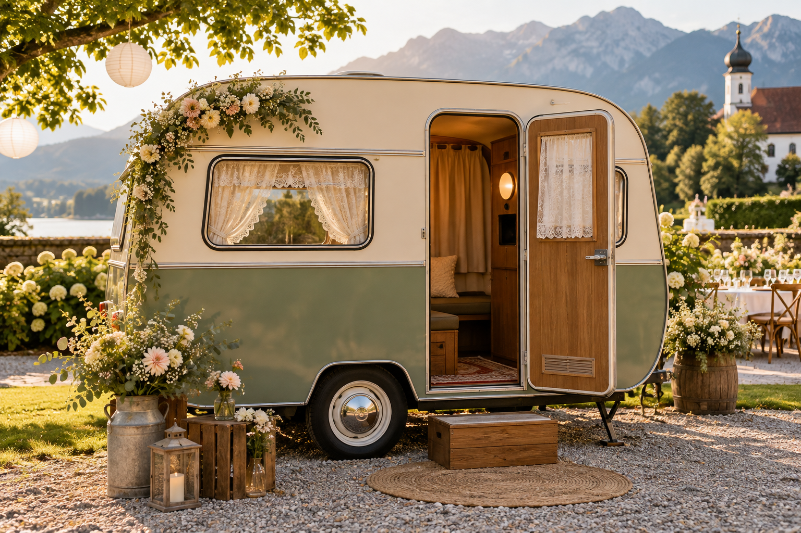
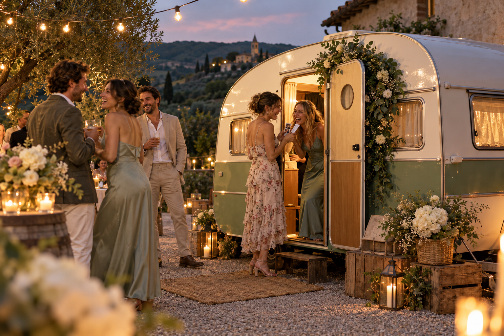
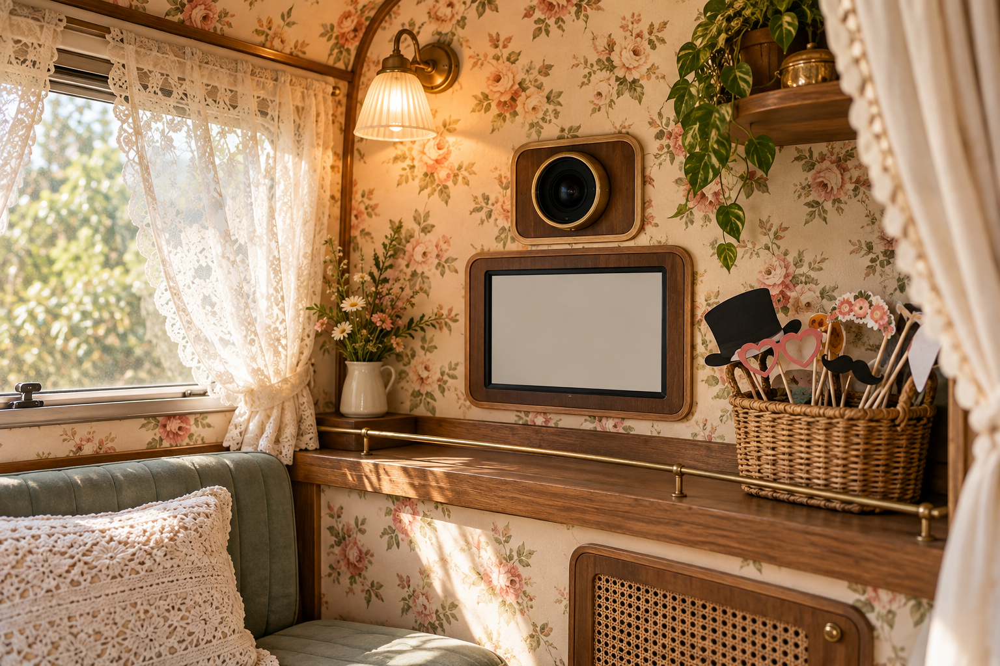

Ein Wohnwagen. Viele schöne Erinnerungen.
Ein bisschen Retro.
Ganz viel Freude.
Eine Fotobox mit Charakter: Tante Else bringt Vintage-Charme und unvergessliche Fotomomente zu eurem Fest.
Euren Wunschtermin anfragen
Mit Liebe zum Retro-Flair
Für die Momente, die bleiben.Dürfen wir vorstellen?
Eure charmante
Begleitung fürs Fest.
Ihr möchtet euren Gästen mehr bieten als eine gewöhnliche Fotobox? Else verbindet den besonderen Look eines nostalgischen Wohnwagens mit dem Spaß gemeinsamer Fotos.
Ob eine kleine Feier oder ein großer Anlass: Mit ihrem Retro-Charakter wird sie Teil eurer Veranstaltung und lädt zu spontanen Erinnerungsbildern ein.
Else näher kennenlernenAußen nostalgisch. Innen voller Möglichkeiten.
Spitze, Blümchen
und moderne Technik.
Hinter der nostalgischen Einrichtung steckt die Technik für eure Fotomomente. Dazu kommen Accessoires, mit denen eure Gäste ihrer Kreativität freien Lauf lassen können.
Vintage-Atmosphäre
Ein Wohnwagen mit Retro-Flair als besonderer Treffpunkt auf eurem Fest.
Accessoires & Ideen
Gemeinsam ausprobieren, lachen und Erinnerungen festhalten.
In eurer Region
Unterwegs rund um München, Salzburg und im Chiemgau.

Lasst uns euer Fest kennenlernen
Hat Else an eurem
Tag schon etwas vor?
Erzählt uns, wann und wo ihr feiern möchtet. Mit diesen Angaben kann eure Anfrage später persönlich beantwortet werden.
Das Formular zeigt den Ablauf. Eure Angaben werden weder gespeichert noch versendet. Bitte verwendet Beispieldaten.